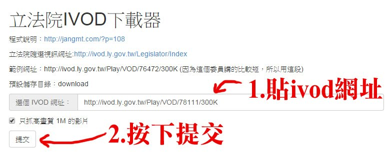
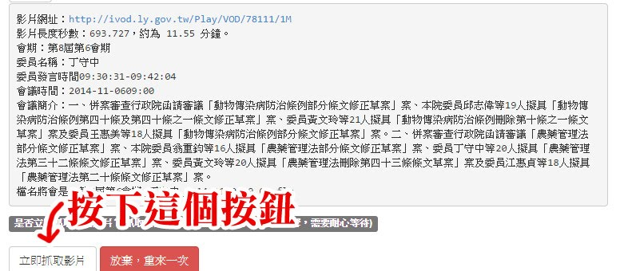
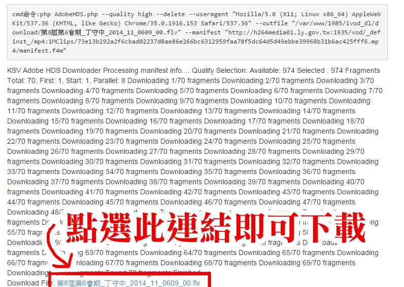

【兵團操作教學說明】
如何註冊成為國會調查兵團
- 先點選上方「加入兵團」
- 填寫註冊資料，設定email、密碼、暱稱。
- 回個人信箱收取email認證信。點擊認證連結。（認證信件可能會被判讀為垃圾信或廣告信，若沒有收到請到廣告信件夾或垃圾信或垃圾桶搜尋）
- 完成帳號註冊。
回報影片說明
- 先點選上方「登入」，輸入帳號密碼完成登入
- 登入後，上方會出現「回報立委資訊」的按鈕，點選後會顯示「回報立委資訊─請選擇要回報的類型」
- 點選「回報影片片段」，即可輸入資料。有*為必填項目。
- 確認必填項目都有填寫，按「確定送出」即完成回報
回報新聞說明
- 先點選上方「登入」，輸入帳號密碼完成登入
- 登入後，上方會出現「回報立委資訊」的按鈕，點選後會顯示「回報立委資訊─請選擇要回報的類型」
- 點選「回報新聞資訊」，即可輸入資料。有*為必填項目。
- 確認必填項目都有填寫，按「確定送出」即完成回報
回報質詢紀錄說明
- 先點選上方「登入」，輸入帳號密碼完成登入
- 登入後，上方會出現「回報立委資訊」的按鈕，點選後會顯示「回報立委資訊─請選擇要回報的類型」
- 點選「回報質詢文字紀錄」，即可輸入資料。有*為必填項目。
- 確認必填項目都有填寫，按「確定送出」即完成回報
我想剪影片，要如何下載ivod的影片？
- 連結到兵團提供的ivod下載工具網址: http://1985.paulyu.org/ivod_dl/hello.php
(註：本工具是參考八克里文章，由國會調查兵團志工架設) - 貼入ivod的網址，接著按「提交」
註：注意！ivod的網址結構為 http://ivod.ly.gov.tw/Play/VOD/78111/300K
或 http://ivod.ly.gov.tw/Play/Full/7959/300K
這兩種，這兩種以外的格式，是抓不到影片的喔！
ivod網址請上 http://ivod.ly.gov.tw/Legislator 選擇立法委員後，點選播放影片即可取得。
 - 等程式跑完後，畫面上會顯示該影片的資料，按「立即抓取影片」，這時候程式會開始跑，請稍後。
 - 程式跑完後，把捲軸移動到網頁畫面最下方，點選Download File:後面顯示的影片連結，即可下載。

如何看ivod時間區間？
- 先進入立法院議事轉播ivod網站：http://ivod.ly.gov.tw/
- 點選「會議隨選紀錄」
- 選擇要看的立委姓名、影片後，點選「播放影片」
- 將滑鼠移到影片上，影片底下會顯示播放進度（滑鼠移走會隱藏），請記錄下你聽到的精采片段的開始與結束的時間，在回報資料時填寫即可。
可以回報新聞影片嗎？
可以，凡是跟立委有關的影片資料，包含ivod，新聞影片，電視影片都可以回報。步驟如下：
- 在回報立委資訊時，選擇「回報影片片段」。
- 在「影片出處分類＊」選擇「新聞影片」，只要您要回報的資料不屬於ivod，就都選擇新聞影片即可。
- 填寫好其他必填資料後，按確認送出即可。